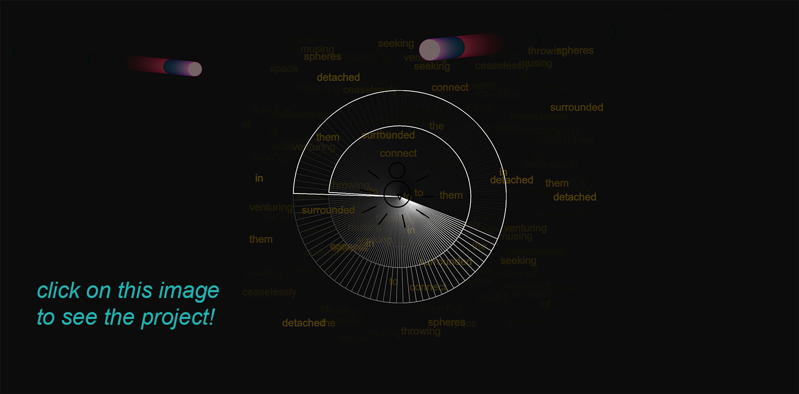
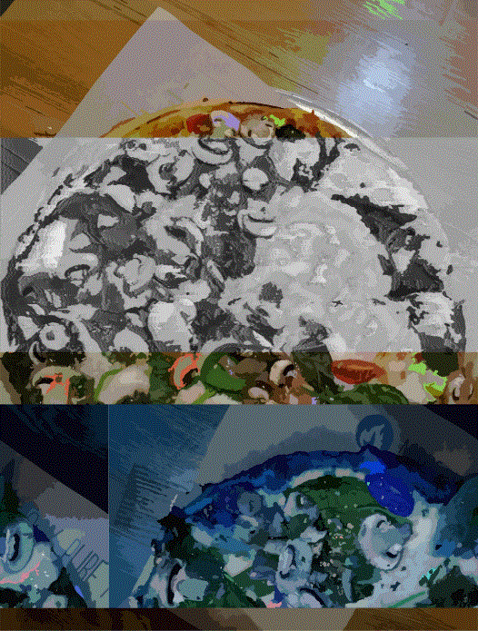
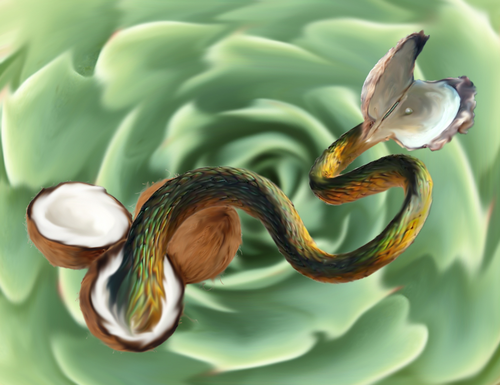

PORTFOLIO
 World Wide WebWorld Wide Web, 2019
p5.js Javascript Library, HTML/CSS
“Surrounded, detached, in measureless oceans of space,
Ceaselessly musing, venturing, throwing, seeking the spheres to connect them”
─ Excerpt from A Noiseless Patient Spider by Walt Whitman, 1868
These lines of Whitman’s poem are referring to his soul which, like a spider web, strives to create connections.
Even though the poem was written centuries before the internet was created, I felt like those lines really reflected
the World Wide Web which is why I wanted to incorporate them into my project. The colorful circles approaching the
center of the web are my abstract representation of flies. The spider represents the users of the web/internet.
The chaotic display of the text showcases how vast and abundant with information the internet is that people can
often get lost in it. The spider can also get lost in the spider web as its web gets larger and more intricate.
The spider is consumed by its own creation.
Privasee, 2019
HTML/CSS, Video, TouchDesigner, Adobe Premiere
This project is an exploration of my growing paranoia over my digital footprint and privacy.
An ominous eye watches me from behind my own camera as my screen distorts and moves away from me,
symbolizing a transfer of my data to corporations who will use it against me.
Click on the power button, Windows start button, or web camera to play.
Branching Off, 2019
p5.js Javascript Library, HTML/CSS
In the process of art making, your piece rarely comes out how you envisioned it, whether it's due to the tools you have access to,
the nature of the medium you are working with, or your own technical ability. This drawing machine is about embracing and adapting to the deviations
from your envisioned goals. This project is actually a perfect example of my concept.
Interact with Intercat, 2019
HTML/CSS, Video
I made this net art project as a comfort to myself, as I was missing my cat friends, Gordo and Mel.
I wanted to recreate my time with them by using video footage to produce a sense of virtual interaction with the cats.
Ruins, 2019
Photo, Video, TouchDesigner, Adobe Premiere
I collaborated with my classmate, Matteo Leva to create this installation project, which consists of a video and a destroyed book.
The video is a digital rendition of the book, and both are glitched out.
An iPad screen playing the video is placed inside the destroyed pages of the book and viewers are encouraged
to explore both the video and the book, as well as the connections between the two.
The subject of the book and video is The Colosseum.
While Matteo worked on the physical aspects of the installation, the ruined book and tablet that would be fit inside,
I worked on the digital video art that would play on the tablet placed inside the book.
Synthesis, 2019
p5.js Javascript Library, HTML/CSS
Drawing machine meets sound synthesizer. An artistic squid paints the sea with its ink and bubbles.
Coral reefs emerge from the sea floor when they hear the noise. Users can create a scene with both the visual and auditory controls.
Clash, 2019
Video, Adobe Premiere
See what I see. This short film is a piece of my mind where memories collide with and distort one another.
I used a collection of video footage that I saved from random events from my life for the very purpose of producing some form of video art.

Pieces, 2017
Pizza, Photography, Audacity
I was working at a pizza shop at the time that I made this piece. I was very
stressed out balancing school and my job, and my personal relationships with
those closest to me were also suffering. The reason why I included pizza as one
of my mediums is because I created this pizza for the sake of this project. I
took a photo of my pizza and ripped it up to convey the feeling of everything falling
to pieces and being rearranged into something new and completely different.

Untitled, 2017
Photography, Adobe Photoshop
This was the first art piece I created since I started pursuing a DMA degree at SJSU.
It is a display of the vulnerability I was beginning to embrace. What does a
coconut, snake, clam shell, and a succulent have in common? Protective layers!
Art allows me to break those layers down and come out of my shell.